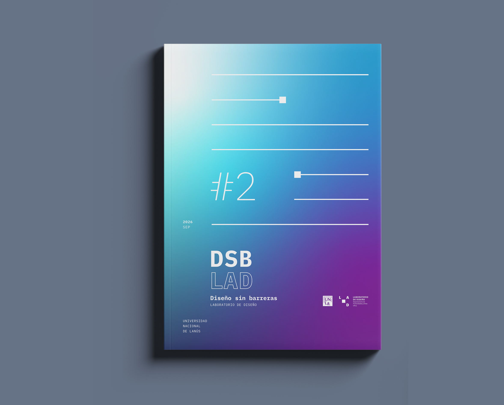

La revista DSB-LAD es una publicación anual del Laboratorio de Diseño del Departamento de Humanidades y Artes de la Universidad Nacional de Lanús. Está orientada a las áreas del Diseño Industrial y del Diseño en Comunicación Visual, con apertura hacia otras disciplinas del diseño. Su objetivo es constituirse como un espacio plural para la reflexión y la difusión de conocimientos en los ámbitos académico y profesional, con el fin de promover el diálogo entre la comunidad, el campo educativo, el ejercicio profesional y el público general interesado en el diseño.
DSB-LAD busca visibilizar los resultados de proyectos de las asignaturas de grado y posgrado, así como procesos creativos e innovaciones en el campo del diseño, para contribuir al fortalecimiento del pensamiento crítico y proyectual. Ofrece dos posibilidades de participación para investigadores, docentes, profesionales y estudiantes vinculados al campo del diseño. La primera corresponde al envío de artículos, ensayos académicos, reseñas críticas y proyectos teóricos dentro de los campos del diseño y disciplinas afines. La segunda toma el formato de comunicación breve y propone una presentación con énfasis en lo visual, en la cual se muestran experiencias en desarrollo de productos, trabajos de estudiantes, avances de investigación y resultados de procesos académicos.